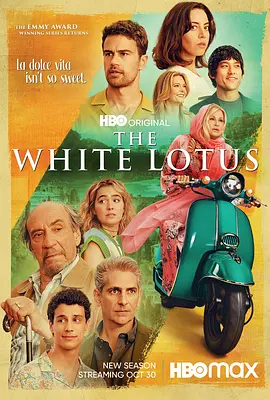

8.4
白莲花度假村 第二季
The White Lotus Season 2
2022
美国
评分 8.4
导演:
麦克·怀特
演员:
F·默里·亚伯拉罕 / 詹妮佛·库里奇 / 亚当·迪马科 / 梅格翰·法伊 / 贝亚特丽切·格兰诺
类型:
剧情,喜剧
剧情简介
故事将背景移至阳光炽烈的西西里岛。度假村外是湛蓝海岸，内部却暗潮涌动。新到的客人们步入大理石大厅时，都带着各自掩藏的情绪：有夫妻想通过旅程修补关系，却在相互试探中愈加敏感；有家庭希望追溯故乡根源，却在旅途中撞见彼此未曾言说的矛盾；也有旅客在金钱与欲望的驱动下，试图改写自己的命运。酒店的节奏表面井然有序，工作人员维持着礼貌与专业，但他们与客人之间的距离在日常互动中悄然缩短。有人因细微的关怀产生依赖，有人把礼节当作谈判筹码，也有人在酒精与夜色掩护下，不小心暴露了真实的意图。西西里的古老建筑和热烈气息让情绪更易失控，每一次对视或争吵，都仿佛随时可能演变成一场新的冲突。在海风吹拂的黄昏，餐桌上的对话变得锋利，散步间偶遇的陌生人也可能成为故事转折的引子。每位角色都被拉入一张关系网：嫉妒、怀疑、诱惑、野心无处不在，静静等待裂开口子。酒店经理努力维持秩序，却始终无法阻止外来力量侵入她苦心经营的领地。客人与当地青年之间的暧昧往来，也逐渐牵动整个故事的方向。一周的时间里，阳光下的微笑逐渐褪色。那些看似完美的旅程在不经意的瞬间露出暗面，而每个人都在这片美丽的岛屿上，被迫面对自身的欲望与选择。最终，度假村依旧奢华，但离开这里的人，再也无法保持来时的轻松。